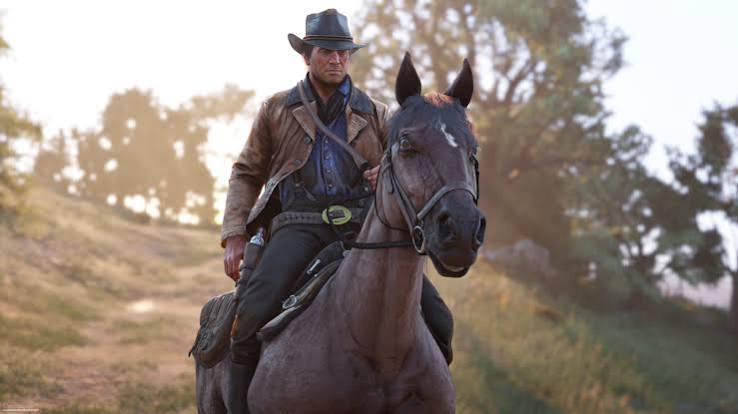
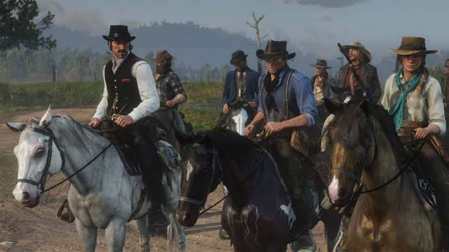
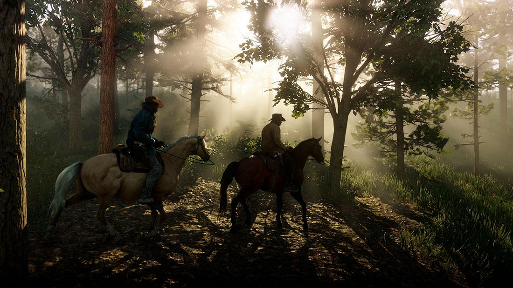
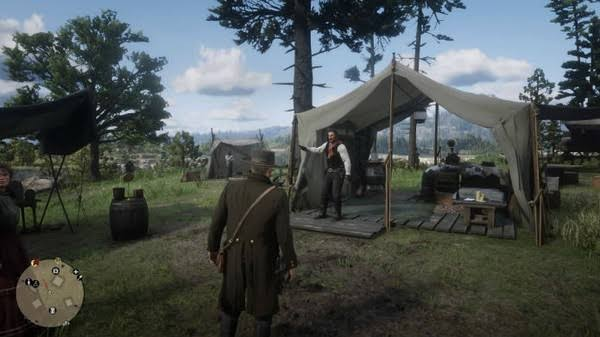
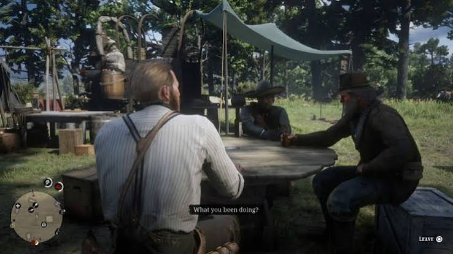
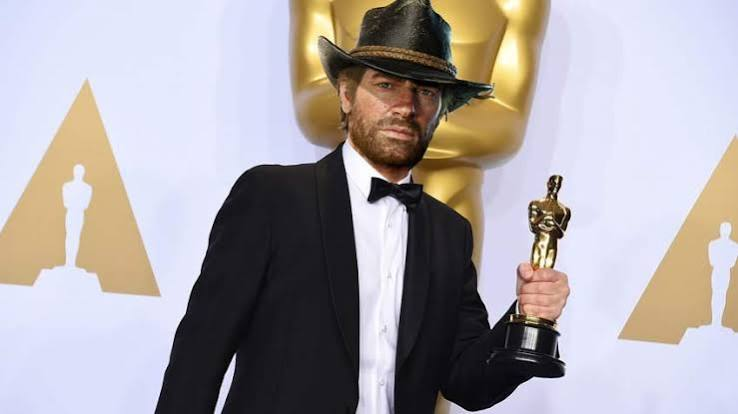

O Fim de uma Era
Lançado em 2018, Red Dead Redemption 2 redefiniu os padrões da indústria de videogames. O jogo não é apenas uma sequência de ação, mas um drama profundo sobre lealdade, sobrevivência e a inevitabilidade da mudança. Ambientado em 1899, o título coloca os jogadores na pele de Arthur Morgan, um membro sênior e executor da gangue Van der Linde.
A narrativa principal foca na queda da era dos pistoleiros. Após um assalto a banco dar terrivelmente errado na cidade de Blackwater, a gangue é forçada a fugir pelas montanhas nevadas e atravessar o coração da América. O governo, caçadores de recompensas e a agência Pinkerton estão fechando o cerco.


Realismo e Imersão
Durante a jornada, o jogador precisa gerenciar o acampamento, caçar para conseguir suprimentos, realizar roubos e tomar decisões que afetam a honra de Arthur. Ser um criminoso impiedoso ou tentar ajudar os necessitados molda a forma como o mundo e os outros personagens reagem a você nas ruas das cidades.
O nível de detalhes alcançado pela Rockstar Games é sem precedentes. Desde o comportamento realista dos animais até a forma como a lama e a neve grudam e afetam as roupas e a movimentação dos personagens, cada pequeno elemento foi pensado para criar a experiência mais incrível possível.


Segundo lugar
Pode-se afirmar que o lançamento de Red Dead Redemption 2 foi um marco no mundo dos jogos. Apesar de não ter ganho o Jogo do Ano na disputa contra God of War (2018), o jogo é aclamado e considerado por muitos o melhor jogo já feito. Sua riqueza em detalhes, gráficos e jogabilidade encantou os jogadores, que passaram a cobrar a mesma excelência em outros jogos da indústria
A grande maioria da comunidade contesta, até hoje, o fato de o prêmio de Jogo do Ano ter sido entregue a God of War, da Sony. O resultado é visto por muitos como uma das maiores injustiças da história dos games.
